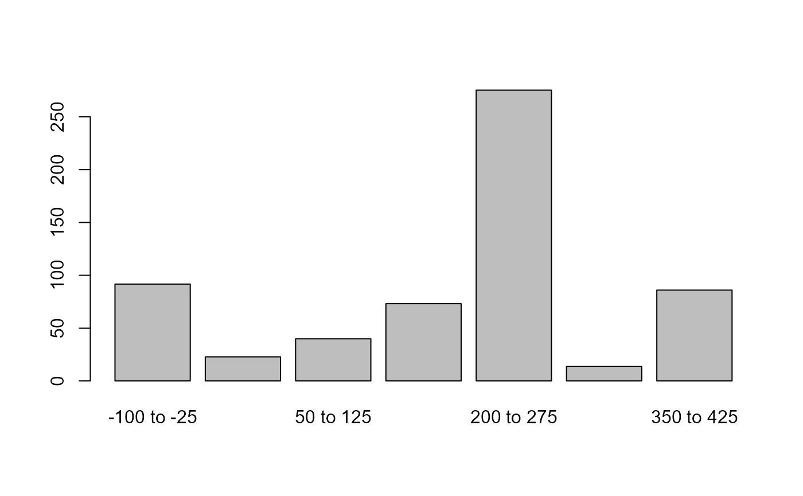

prex.RdA function to compute probabilities of existence of artefacts related events.
prex(x, type = c("aoristic", "mp", "other"), taq, tpq, vars,
bins = NULL, cp, weight = 1, DF, out, plot = FALSE, main = NULL,
ylim, keep, ...)list or data frame object of variables and observations.
Type of date format to compute or plot:
aoristic aoristic sum
mp mid points and range
other
timespan endpoint terminus ante quem (TAQ)
timespan endpoint terminus post quem (TPQ)
boundaries of existence of x (vector for timespan endpoints)
length of the break (integer and optional)
Chronological phase:
"bin5" five-bins from the antiquity period
"bin8" eight-bins from the antiquity period
list with a customized chronological phase
value to observations (optional)
return also data frame with observations? (optional and logical)
number of outliers to omit (integer or vector where first entry id for latest date)
plot the results?
plot's main title (optional)
limit in \(y\)-axis (optional, for plot)
for mp, keep variables in output? (optional and logical)
additional optional parameters
Currently, the probability of existence of the observations is the aoristic sum computed across events for portions of time
delimited by a TAQ in taq and TPQ in tpq, which are endpoints from the stance of the timespan.
Alternatively, these two boundaries of existence of x are specified in vars.
In case the bins are set to NULL, then the time breaks take the chronological periods in cp, which by default
is "bin5" or five-periods for the EDH dataset.
Another built-in option is "bin8" for eight chronological periods, but option cp is open for other periodization models
as long as the categories of time blocks are components of a list object.
A data frame with values according to either bins or cp.
If plot is specified, a bar plot with bars of outcomes by bins or cp.
Crema, E. ``Modelling temporal uncertainty in archaeological analysis,'' J Archaeol Method Theory, 19:440--461. (2012). (for aoristic sum)
Bevan, et al. ``Measuring chronological uncertainty in intensive survey finds: A case study from Antikythera, Greece,'' Archaeometry, 55, 2, 312--328. (2013). (default chronological periods)
When aoristic is set to FALSE, then a simple matching of only TAQ and TPQ is computed from x.
edhw, plot.dates, dts.
## Not run:
# first 100 entries in the EDH dataset
data("EDH")
#> Warning: data set ‘EDH’ not found
EDHdates <- edhw(vars=c("not_after", "not_before"), as="df", limit=100)
#> Warning: "x" is for dataset "EDH".
# compute aoristic sum with five-periods
prex(x=EDHdates, taq="not_before", tpq="not_after", cp="bin5")
#> Arch Class Hell Rom Byz
#> 0.0000 0.0000 398.1836 3913.6588 0.0000
# compute aoristic sum with 75 year span
prex(x=EDHdates, taq="not_before", tpq="not_after", bins=75, plot=TRUE)

#> [1] 0.7
## End(Not run)